Lab No 1: Getting Started with ArcGIS Online
This tutorial is inspired from ArcGIS Online Learning resources available at https://learn.arcgis.com/en/projects/get-started-with-arcgis-online/
Mapping Census Data for Emergency Planning
By the end of this lab, students will be able to: - Navigate and use the ArcGIS Online interface - Add and configure data layers from ArcGIS Living Atlas - Style demographic data using appropriate symbology - Filter data to focus on specific geographic areas - Apply visual effects to emphasize important data patterns - Create a professional web map for emergency planning purposes
Background
In this lab, you will create a web map to identify areas that may need additional evacuation assistance during emergencies. You will work with census data to identify households with limited vehicle access, which is crucial information for emergency planning and resource allocation.
Estimated time of completion: 45 Minutes
Part 1: Begin a Map
Step 1: Access ArcGIS Online
A default web map appears. Your map’s appearance varies based on your account or organizational settings and your browser window size. It may show the United States, the world, or another extent.
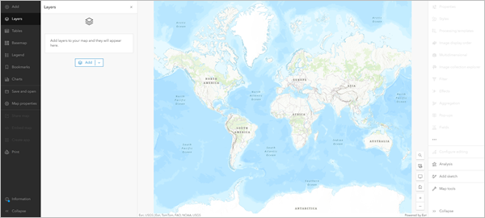
The only layer on the map is the basemap, which provides geographic context such as water bodies and political boundaries. The default basemap is Topographic, but your map may have a different basemap depending on your organization’s settings.
On either side of the map are the toolbars: - Contents (dark) toolbar: Allows you to manage and view map contents - Settings (light) toolbar: Provides tools and options for configuring and interacting with map layers - Layers pane: Lists the data you add to the map
Part 2: Add a Layer
Layers contain geographic data that can be displayed on your map. To determine areas that may need evacuation assistance, you’ll add a layer containing demographic data by census tract.
In the Layers pane, click Add
In the Add layer pane, click My content and choose Living Atlas
In the search box, type or paste
ACS Vehicle AvailabilityClick the ACS Vehicle Availability Variables - Boundaries result
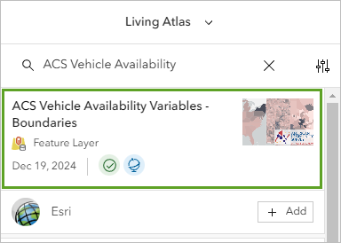
In the item pane, expand the Description section and read about the layer
Close the item pane
For the ACS Vehicle Availability Variables - Boundaries layer, click Add
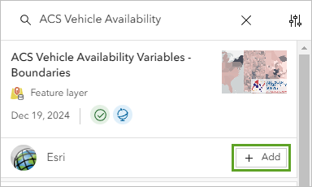
The layer is added to the map, styled to show the percentage of households with no vehicle available in each census tract. Darker areas have higher percentages of households without vehicle access.
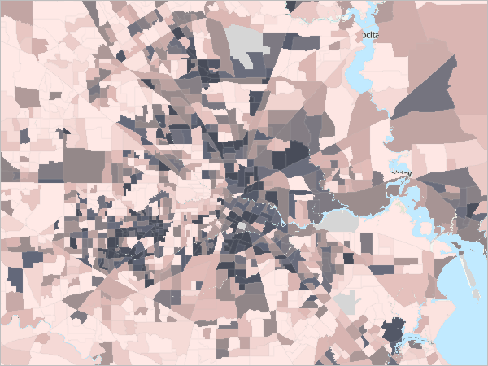
Step 1: Manage Layer Groups
At the top of the Add layer pane, click the Back button
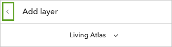
In the Layers pane, expand the ACS Vehicle Availability Variables - Boundaries group
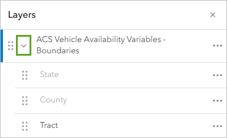
Drag the ==Tract== layer above the group
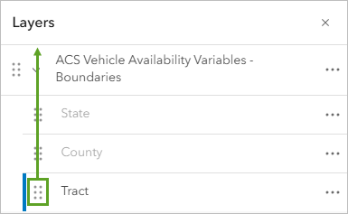
For the group, click the Options button and choose Remove
Part 3: Style Demographic Data
Step 1: Select Styling Options
In the Layers pane, click the Tract layer to select it
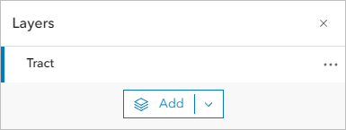
On the Settings toolbar, click the Styles button
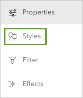
In the Styles pane, ensure ==Percent of households with no vehicle available== is selected
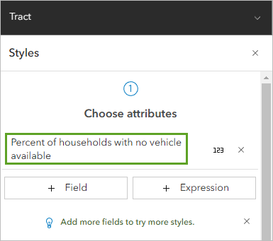
The list of available styles is determined by the data type. In this case, the options are for numeric data. The map shows the Counts and Amounts (color) style. The colors are based on the High to low theme. This style symbolizes each census tract with a different color based on the percentage of households without a vehicle. Census tracts with the lowest values have a light color, while those with the highest values have a dark color.
Step 2: Customize Symbol Style
For Pick a style, on the Counts and Amounts (color) card, click Style options
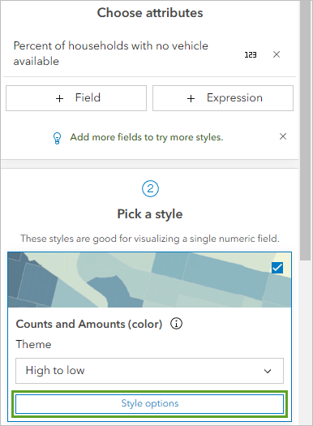
For Symbol style, click the color ramp
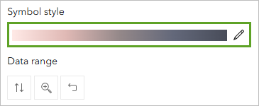
In the Symbol style window, for Colors, click the color ramp
In the Ramp window, choose Purple 18
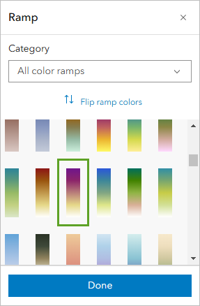
The new color ramp is applied to the map. Census tracts with high percentages are displayed in dark purple while low percentages are white.
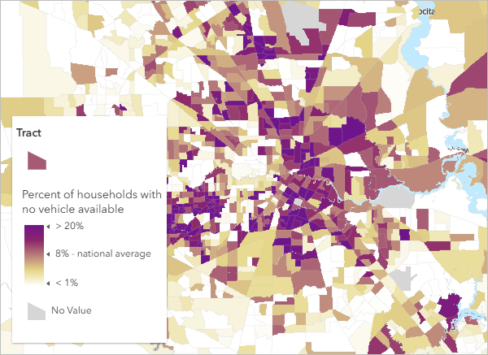
If needed, click Flip ramp colors so high percentages show in dark purple
Click Done to close all style windows
Step 3: Rename the Layer
In the Layers pane, for the layer, click the Options button and choose Rename
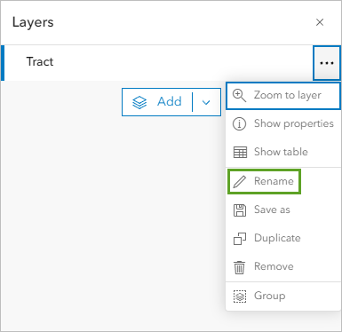
For Title, type Percent of Households with No Vehicle Access
Click OK
Part 4: Change the Basemap
On the Contents toolbar, click Basemap
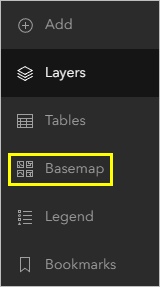
In the Basemap pane, find and choose Human Geography Map
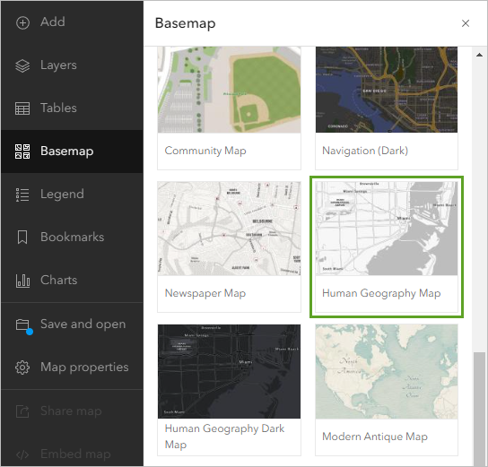
On the Contents toolbar, click Layers to return to the Layers pane
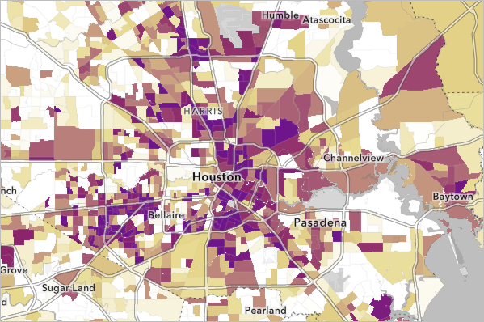
The new basemap shows labels and contextual information over the census data.
Part 5: Filter the Map
Step 1: Create a Geographic Filter
Ensure the Percent of Households with No Vehicle Access layer is selected
In the Settings pane, click Filter
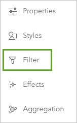
In the Filter pane, click Add new
Under Condition, click the first box and choose ==County==
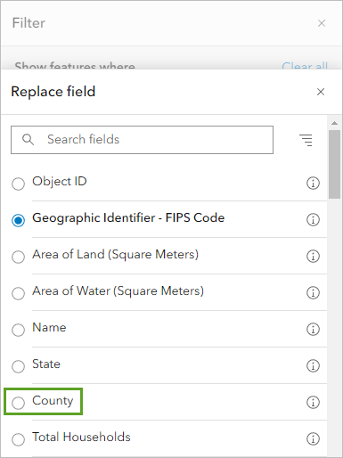
Leave the operator as is
For the third box, click the drop-down arrow, type ==Harris County== and select it
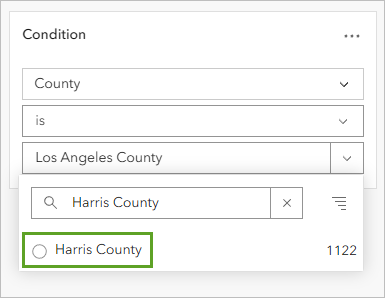
Click Save to apply the filter
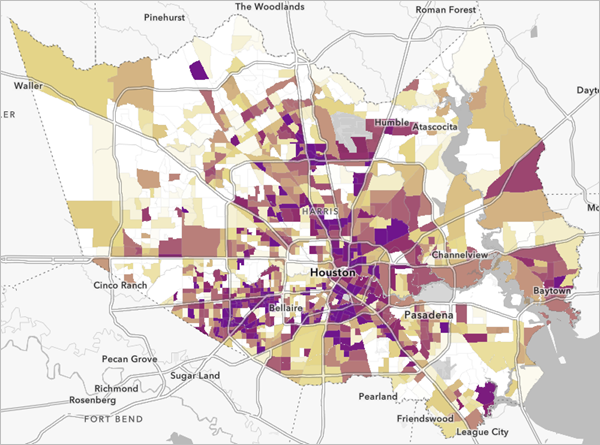
Part 6: Emphasize the Top Tracts
Step 1: Examine the Attribute Table
For the layer, click the Options button and choose Show table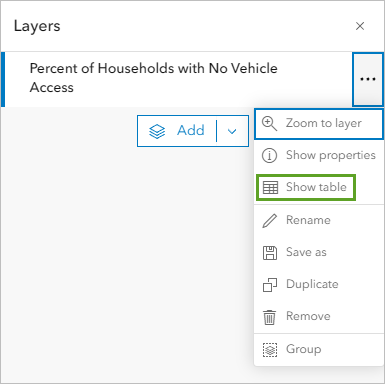
The layer’s attribute table appears. The attribute table is a way of viewing all of the attributes that exist for each feature. Each row in the table represents a feature (in this case, a census tract area). The columns, or fields, provide information about the census tract features, such as the County attribute that you used to filter the data earlier.
The top of the table indicates that there are 1,122 census tracts in Harris County.
Scroll right to find the ==Percent of households with no vehicle available== column
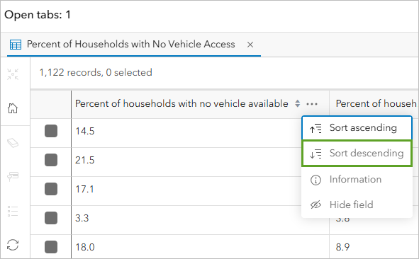
The table is sorted so that the Percent of households with no vehicle available field shows tracts in order of highest to lowest values. The highest value is 48.9 percent.
Click the Menu button for this column and choose Sort descending
Identify the 10 highest values in the table
Close the table
Step 2: Apply Visual Effects
In the Settings pane, click the Effects button
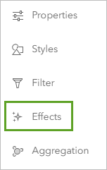
In the Effects pane, click Feature-specific
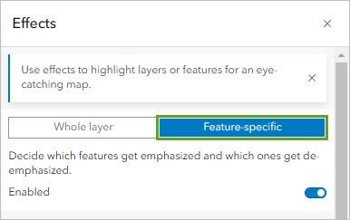
Click the Drop Shadow + Transparency effect
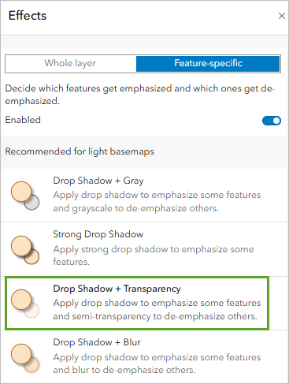
In the Drop Shadow + Transparency pane, drag the histogram slider to the 48.9 label. This will adjust the histogram slider to emphasize the top 10 tracts
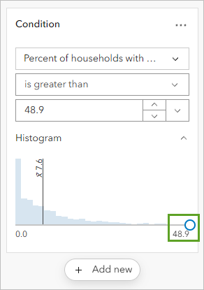
Modify the logical expression to highlight areas above your identified threshold. Change the logical expression to read Percent of households with no vehicle available is greater than 36.8.
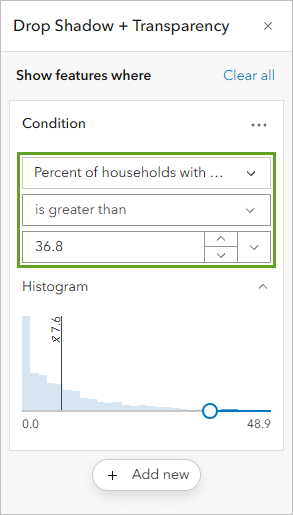

Close the effects windows
Part 7: Final Documentation and Submission
Step 1: Save Your Map
On the Contents toolbar, click Save and open and choose Save as
For Title, type: ==Census tracts in Houston with low vehicle access==
For Tags, add the following (press Enter after each):
- ==Hurricanes==
- ==Evacuation Assistance==
- ==Houston==
For Summary, type: ==This map shows census tracts in Houston, Texas, that have many households without access to a vehicle. These areas may need to be considered for evacuation assistance in case of a hurricane or other natural disaster.==
The map is saved. It now appears in your account’s content. You can access your content by clicking the options button next to the map’s name and choosing Content. For now, you’ll set the sharing permissions.
By default, your content is private and only visible to you and your organization’s administrator. You can share content to different groups of viewers depending on the level of privacy you want to maintain and the content’s audience and purpose. For example, if you choose to share it with your organization, only users with accounts in the same organization as you can access your content. For this tutorial, you’ve created a public information map and you want it to be available to everyone, so you’ll share it publicly.
- Click Save
Step 2: Submission Requirements
IMPORTANT: Instead of sharing your map publicly, you must provide descriptions of your completed work.
Take a screenshot that includes: - Your complete computer screen - The ArcGIS Online map you created - The system date and time visible (usually in the taskbar/menu bar) - All relevant map elements (legend, layers panel, styled data)
Ensure your map displays all required elements: - Properly filtered census data - Appropriate styling with color scheme - basemap - Applied effects highlighting top areas - Descriptive layer name.
Take a full-screen screenshot showing:
Your completed map
Current date and time from your system
ArcGIS Online interface with your map title visible
The date-time stamp allows the marker to validate when the work was completed
Additional Resources
ACS Vehicle Availability Variables - Boundaries data is from the American Community Survey.
Topographic map sources: Esri, TomTom, Garmin, FAO, NOAA, USGS, OpenStreetMap contributors, and the GIS User Community
Human Geography Map sources: Esri, TomTom, Garmin, FAO, NOAA, USGS, OpenStreetMap contributors, and the GIS User Community
To extend your learning with ArcGIS Online: - Create interactive apps from web maps - Learn advanced styling techniques - Explore spatial analysis tools - Access the ArcGIS tutorial gallery for more exercises
To learn how to transform your web map into an interactive app, check out the tutorial Create an app.
To learn useful tips and tricks for web maps, check out the series Common skills for working with data in ArcGIS Online.
To learn about performing spatial analysis, check out the series Perform analysis in Map Viewer.
To learn more advanced techniques for styling your map, check out the series Cartographic creations with web maps.